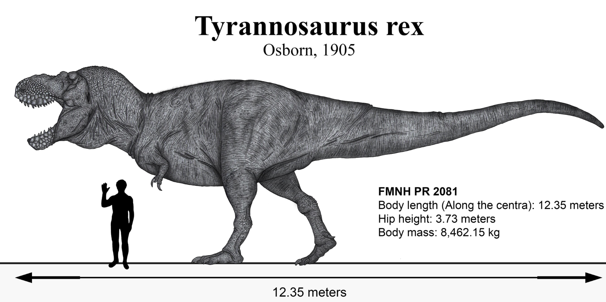

Kretase, Mezozoyik Zaman'ın üçüncü ve en uzun dönemidir. İsmini bu dönemde bolca bulunan ve Latince tebeşir anlamına gelen creta kelimesinden alan bu evre, dinozorların hakimiyetinin zirveye ulaştığı, çiçekli bitkilerin dünyayı yeşillendirdiği ve trajik bir göktaşı çarpmasıyla sona eren devasa bir jeolojik zaman dilimidir.
Kıtaların Ayrılışı ve Yaşamın Dönüşümü
Kretase Dönemi, hem coğrafi parçalanmaların hızlandığı hem de modern ekosistemlerin temellerinin atıldığı bir süreçtir:
• Kıtasal Parçalanma: Jura'da başlayan parçalanma süreci hızlanmış; Güney Amerika, Afrika, Antarktika ve Avustralya birbirinden ayrılarak bugünkü Güney Atlantik ve Hint Okyanuslarını oluşturmuştur.
• Çiçekli Bitkilerin Yükselişi: Erken Kretase'de ortaya çıkan kapalı tohumlu (çiçekli) bitkiler hızla çeşitlenerek dönemin sonunda dünya genelinde baskın bitki grubu haline gelmiştir.
• Dinozorların Altın Çağı: Karada Tyrannosaurus rex ve Triceratops gibi ikonik türler hüküm sürerken, gökyüzünde devasa Quetzalcoatlus gibi teruzorlar süzülmekteydi.
• Sıcak İklim ve İç Denizler: Yüksek deniz seviyeleri nedeniyle karaların üçte biri sular altında kalmış, bu durum geniş sığ iç denizlerin ve ünlü tebeşir yataklarının oluşmasına yol açmıştır.
• Büyük K-Pj Yok Oluşu: Dönem, Meksika'daki Chicxulub Krateri'ni oluşturan asteroid çarpması sonucu kuş dışı dinozorların ve dev deniz sürüngenlerinin neslinin tükendiği büyük bir kitlesel yok oluşla son bulmuştur.

Geç Kretase döneminin en ikonik yırtıcısı olan Tyrannosaurus rex'in (12.35 metre) insan ölçeği ile boyut karşılaştırması.